| SH01 0.00–3.60s | 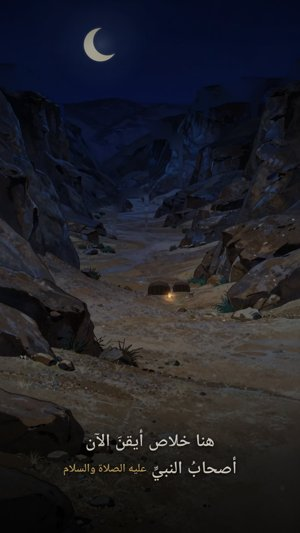 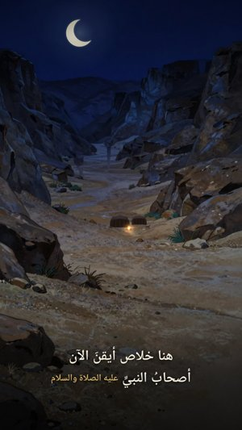 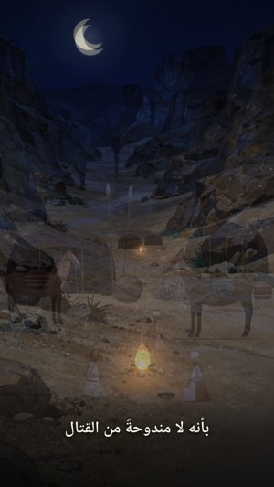 | هنا خلاص أيقنَ الآن أصحابُ النبيِّ عليه الصلاة والسلام / بأنه لا مندوحةَ من القتال Wadi Dhafran at night, slow push-in revealing the camp |
| SH02 3.00–5.30s | 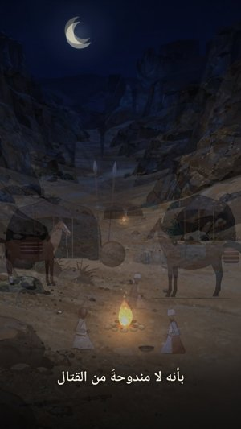 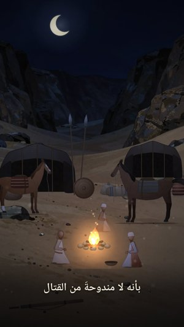 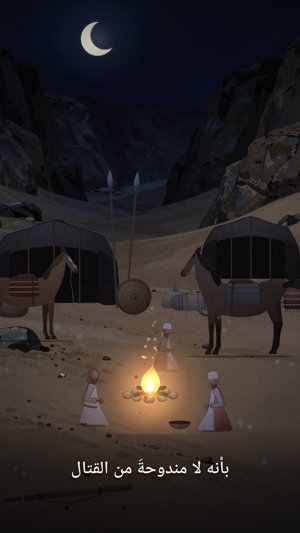 | بأنه لا مندوحةَ من القتال / هنا قام النبيُّ عليه الصلاة والسلام وقال the camp: spears planted, shield, sword - fighting is now certain |
| SH03 5.30–10.24s | 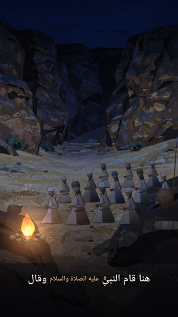 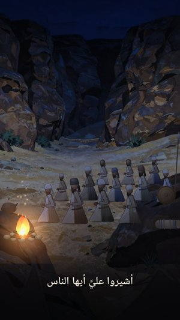 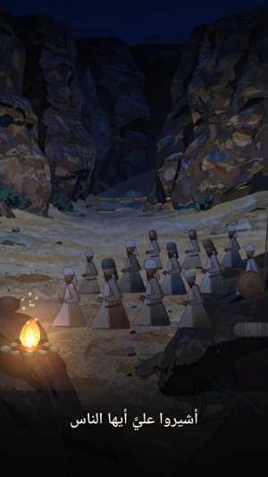 | هنا قام النبيُّ عليه الصلاة والسلام وقال / أشيروا عليَّ أيها الناس group turns toward the off-screen point, no figure shown |
| SH04 10.24–15.96s | 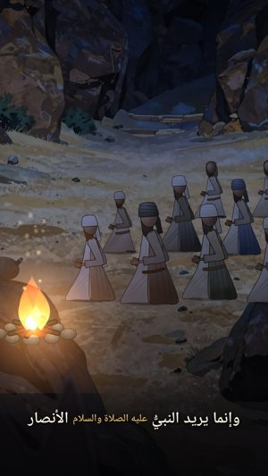 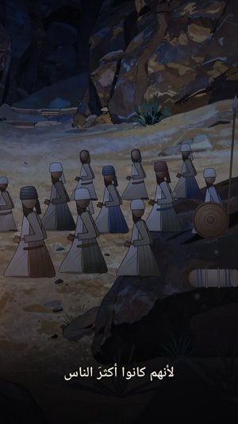 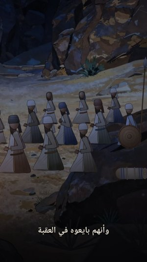 | وإنما يريد النبيُّ عليه الصلاة والسلام الأنصار / لأنهم كانوا أكثرَ الناس / وأنهم بايعوه في العقبة camera pans to the Ansar (more numerous); one places a hand on his chest at "bay'ahu fil-'Aqabah" |
| SH05 15.96–20.20s | 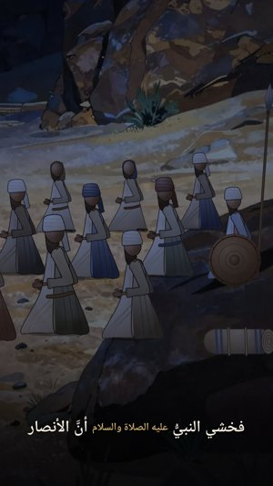 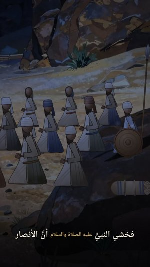 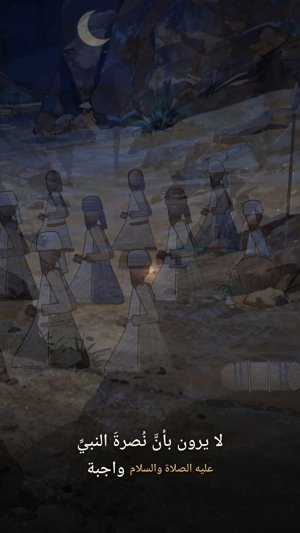 | فخشي النبيُّ عليه الصلاة والسلام أنَّ الأنصار / لا يرون بأنَّ نُصرةَ النبيِّ عليه الصلاة والسلام واجبة Ansar close, stillness, firelight |
| SH06 19.60–25.00s | 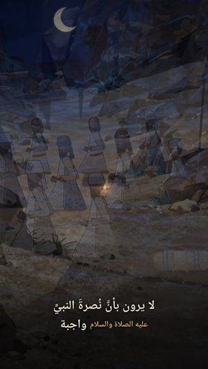 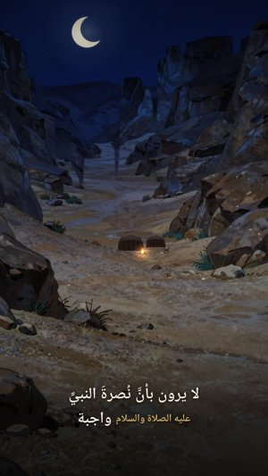 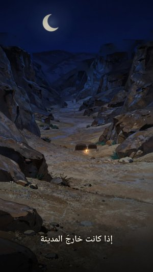 | لا يرون بأنَّ نُصرةَ النبيِّ عليه الصلاة والسلام واجبة / إذا كانت خارجَ المدينة slow pull-out: the small camp far from Madinah in the open wadi |
| SH07 25.00–26.78s | 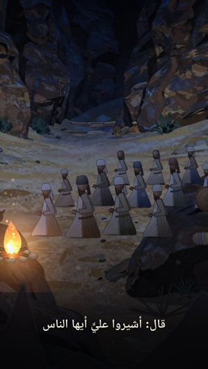 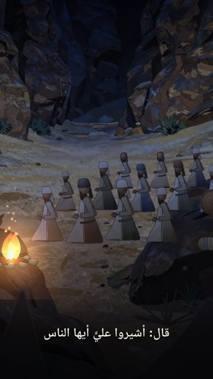 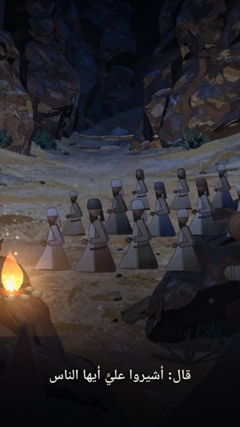 | قال: أشيروا عليَّ أيها الناس stillness |
| SH08 26.78–30.08s | 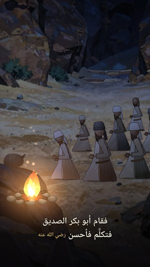 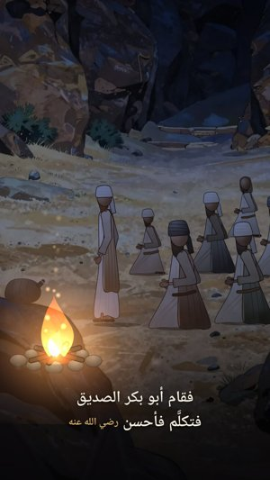 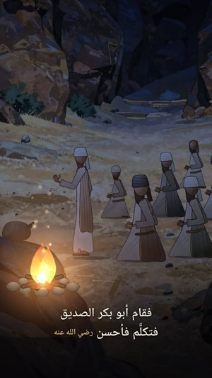 | فقام أبو بكر الصديق فتكلَّم فأحسن رضي الله عنه Abu Bakr rises, gestures, speaks well |
| SH09 30.08–33.64s | 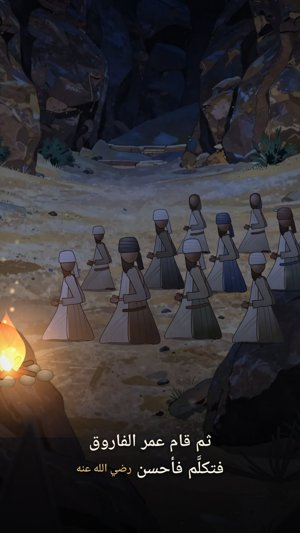 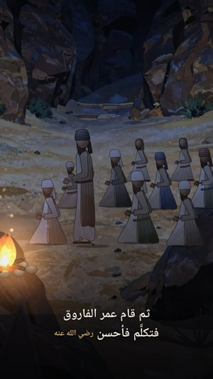 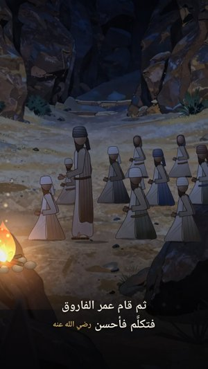 | ثم قام عمر الفاروق فتكلَّم فأحسن رضي الله عنه Umar rises and speaks |
| SH10 33.64–35.50s | 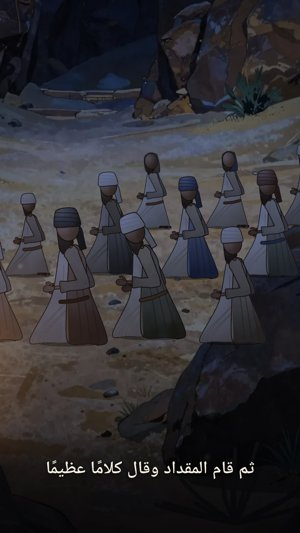 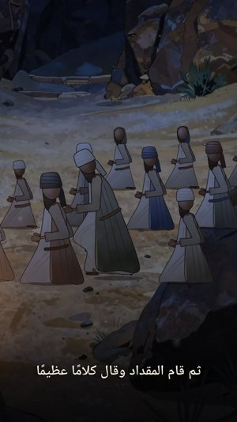 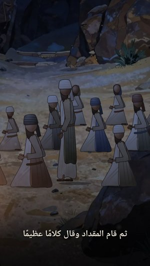 | ثم قام المقداد وقال كلامًا عظيمًا al-Miqdad prepares, shifts weight and rises; cloak settles |
| SH11 35.50–42.10s | 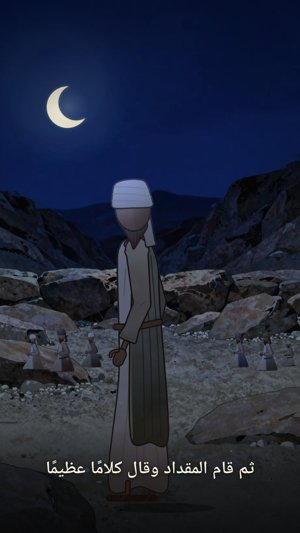 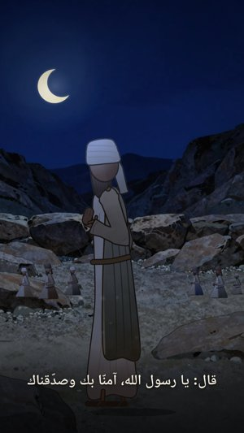 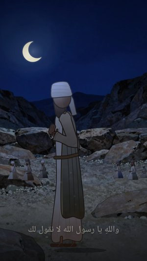 | ثم قام المقداد وقال كلامًا عظيمًا / قال: يا رسول الله، آمنّا بك وصدّقناك / واللهِ يا رسول الله لا نقول لك / كما قال قومُ موسى لموسى medium low-angle; hand to chest on "amanna bika wa saddaqnak" |
| SH12 41.84–47.68s | 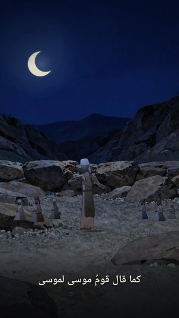 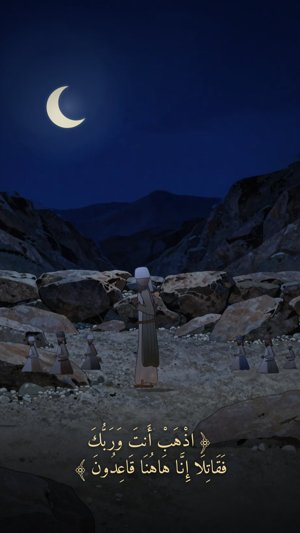 | كما قال قومُ موسى لموسى / ﴿ اذْهَبْ أَنتَ وَرَبُّكَ فَقَاتِلَا إِنَّا هَاهُنَا قَاعِدُونَ ﴾ sacred quotation: calm, still, silence of effects |
| SH13 47.68–52.90s | 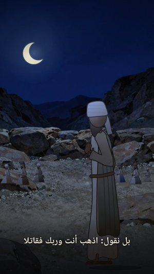 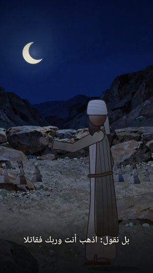 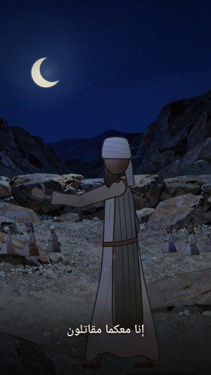 | بل نقول: اذهب أنت وربك فقاتلا / إنا معكما مقاتلون peak: low angle, stillness after the step |
| SH14 52.90–54.66s | 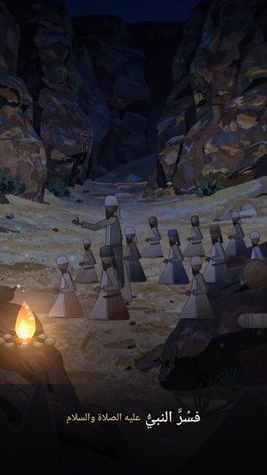 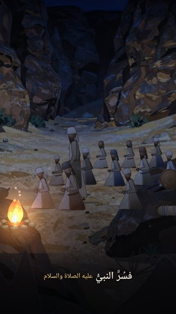 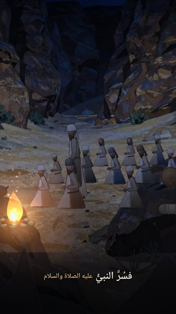 | فسُرَّ النبيُّ عليه الصلاة والسلام warm light swells; quiet acknowledgement |
| SH15 54.66–59.90s | 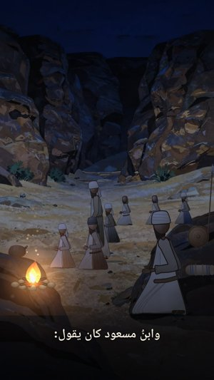 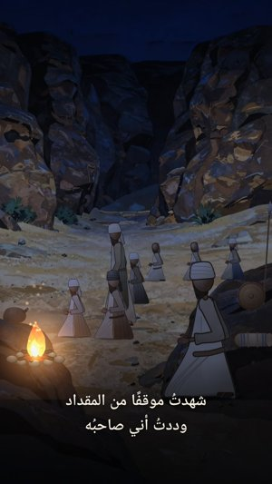 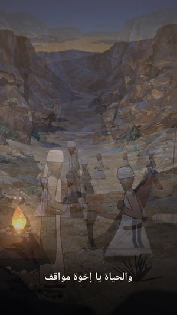 | وابنُ مسعود كان يقول: / شهدتُ موقفًا من المقداد وددتُ أني صاحبُه / والحياة يا إخوة مواقف over Ibn Masud toward al-Miqdad; hand to chest on "wadidtu" |
| SH16 59.20–66.40s | 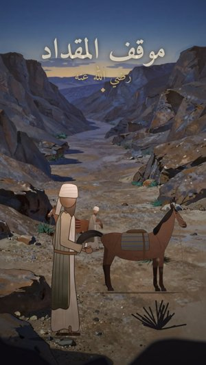 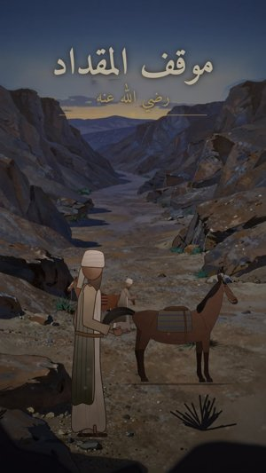 | شهدتُ موقفًا من المقداد وددتُ أني صاحبُه / والحياة يا إخوة مواقف / الحياة مواقف pre-dawn valley: same mountains, time passed; title |